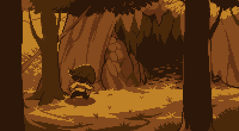

Long ago, two races ruled over the Earth: Humans and Monsters. One day, a war broke out between the two races. After a long battle, the humans were victorious. Seven of their greatest magicians confined the monsters to the Underground with a magic barrier. However, this barrier is not perfect.

The fallen human approaching Mount Ebott.
Many years after the war, in 201X, a human child climbs Mount Ebott for their own mysterious reason. It is said that those who climb the mountain never return. The child discovers an enormous hole in the mountain and falls in. After that, the story begins.
The protagonist starts off their adventure in the Ruins and soon meets Flowey, a sadistic flower who attempts to kill the protagonist for his own amusement. He is thwarted by a motherly monster named Toriel, who teaches the child how to solve puzzles and resolve conflicts in the Underground. After a boss fight with her, she allows the child to exit the Ruins.
The way the story progresses in the main section of the game is determined by the protagonist's actions towards the supporting characters and other monsters. The storyline, as well as much of the dialogue, can vary greatly depending on the player's decisions. The three main paths are the Neutral Route, True Pacifist Route and Genocide Route.